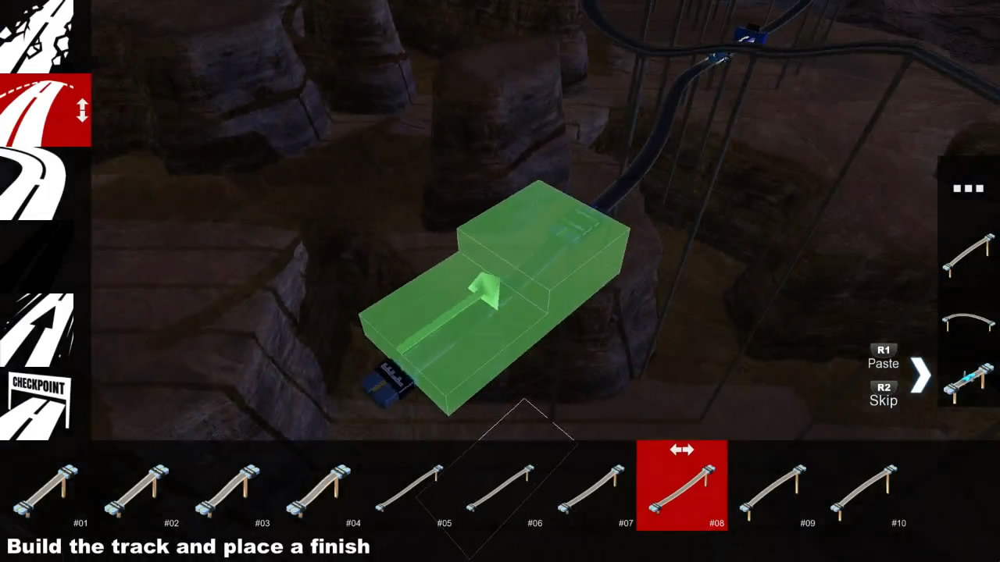

GUI suggestions: the cut-paste tool
Context
Based on the results of playtest #03:
- Some players did not know that the cut-paste tool existed
- Some players found the cut-paste tool difficult to use
Goals of the prototype:
- Decrease time before players notice the tool
- Communicate more clearly the difference between CUT and DELETE
- Make it easier to understand the following events:
- Track segment moves from the map to the cut-paste tool (=stored safely)
- Track segment moves from cut-paste tool to the map (=paste)
- Stored track segment is deleted (=skip)
Suggestions for the cut-paste tool:
- Change #1: stored elements are displayed horizontally, in order to communicate the visual order or storage
- Change #2: